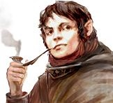
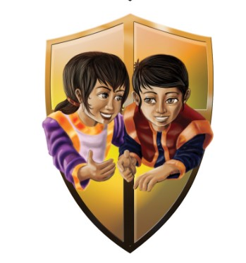
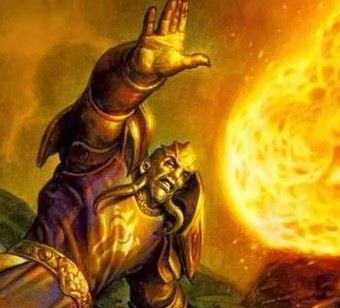
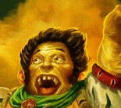

Encrypted wisdom of generations, with keys to doors known and unknown.
Chapter 1 Our Noble Past
Five aspects of our noble past, creating the reigning avatar of our great people.
The moon granting them sight. The earth granting them taste of our grains. The winds bringing him the
chance to smell the flowerbeds. The rivers flow granting gentleness of touch. The fires crackle to hear
the singing of nature. We were a better people, the sages of nature giving their own to nature and
nature giving its best to our regent.
They called our ways barbaric. Stripped us of Identity, of culture, of heritage. But our traditions were
kind, consensual, proud. Nature itself was our ally, our father. |
|
|
Ritual of the one Chieftain
By bargaining with the spirits of the five elements, five of the halfling druids sacrificing their senses to
grant divinity to one chosen by them. The halfling Chieftain will rule for 100 cycles. (100 years) then he
merges with the spirits.
The halfling Chieftain unlocks the power of 5 nature spirits.
|
 Virtues of the Halflings
Our progenitors have coined the five virtues within our kin. Unity, Harmony , Cunning, Compassion and
Might. We subconsciously will follow the paragon of those virtues, and you must strive to that Ideal to
lead the rebellion.
After every long rest the party chooses how you were last day. From their impression, you gain one of
the following bonuses depending on the virtue you exemplified the most.
1)Unity
You gain Max HP equal to half of your level times the number of party members.
2) Harmony
If you do not repeat an action you did last turn you restore HP equal to your character level.
3)Cunning
Once per long rest you can swap initiatives of any two creatures engaged in combat with a bonus action.
4)Compassion
The first (1+your character level) healing done is maximized.
5) Might
The first attack you do after rolling initiative deals double damage.
|
|
Chapter 2: Our Downfall.
We have lost a lot my friends, but our losses are equal part our faults and interventions of the divine. Around two millennia ago our people, blessed by Kirhiya, the aspect of earth left the thickets to settle down in the fertile fields. We and our culture continued to thrive, nigh forgetting our noble hunters past. Comfort became for us the only real goal, as we grew soft and complacent.
Some of us however, made an effort to preserve what was left of our heritage. The five Families of Redhides (Earth), Springsickles (Water), Smokefurrow-Maghfields(Fire), Lighbucks(Air) and Faremonds (Moon) have made a vow to “Make sure our history does not face oblivion.”
For that we as Redhides have gotten into good graces of Earth itself. Our folks, spread all over Tesria have had record crops, while the chosen gfew of the Redhides practiced rituals in the shallow thickets, preserving the land for fruitful harvests.
A man from the Redhides is always chosen at birth to be groomed to be the next Druid of Earth. Just like my brother Kormick.
|
|
|
Chapter 3: Practical skills of the trade.
The Journal appears to be a well of knowledge on different styles of covert actions, aimed to undermine
an unnamed authority. Each chapter is cyphered in different cypher making it even more difficult to
understand the full context.
The third chapter tells about practical skills to engage in undermining of the incumbent oppressive
power. The author speaks about a “foe too powerful to even face” and “only hope of winning is riling up
disparate masses of the realms”
|
|
|

At home with a revolution
You learn thieves cant. On top of that youve been given tips on working with secret languages. You may
understand secret languages you dont know but only a few of the words. |
Riling up the citizenry
(Bonus action)
Leadership is not a talent, its a skill. You can use your bonus action to start a riling speech. The speech
has two properties. Giving the commoners a will to fight with a Successful Charisma Deception or Persuasion
check (DM’s choice), also giving all affected by the speech to receive temporary Hit points at the start of
their turn equal to your character level. You have to maintain the speech every turn by using your bonus
action, otherwise the temporary Hit points disappear. |
|
Chapter 4: Leadership
A revolutionary needs to learn a perhaps most valuable lesson, that leadership is a skill, learned and
honed through ages of meeting and understanding opressed people. And as any other tool, leadership
can be easily mishandled. Or used for selfish desires.
Do not mistake leadership for compassion though, ones who tread upon the path of shepardry bequeth
upon themselves a fate of solitude. As you will forever see those under your care as either sheep,
rescources or both. |
|
|
Shepherd of the meek
You are able to lead the people next to you, with inspiring speeches, and a comforting presence as well
as sterness and a steady hand. As an action you can roll a Deception, Intimidation or a Persuasion check
depending on the situation, targetting a friendly creature that can hear you. This roll is then granted to
them as a portent die, for the next minute. Only 1 of these can be active at a time.
You can use this feature a number of times equal to your proficiency bonus. Uses are refreshed upon a
long rest. |
|
|
Chapter 5: Necessary sacrifices
Our own people die by thousands in bondage, their bodies tossed in a pile, forgotten by their torturers,
grieved by their family, by us... That is why leaders of the revolution need to throw bodies on the pyre,
to keep the revolutions flame from dying.
Just like Abra Bredor, a genius in using death as a currency in service of our goals. Her cruelty is
regrettable, yet necessary. |
|
|
 Induced Heroism
Sometimes a foot soldier has to sacrifice himself, to save the leader of the revolution. If you are hit with
an attack, you can use your reaction to force any character within half of their movement distance, that
is friendly to you, or is under the effect of the “Riling up the citizenry” ability, to take that damage for
you. If the character dies from taking that damage your entire party can use their reaction to make a
single weapon attack to avenge the fallen, inspired by their sacrifice. |
|
|
Chapter 6: Lost and sacrificed Peoples.
Hopplings, few know of them, and even fewer know of their connection to us, as we, long ago were them. As we sought agriculture, and accepted the blessings of the earth, some have rejected it, choosing to stay in the deep forests as an archaic rebellion against the common opinion. Over years our people grew further and further apart, as the Hopplings became more and more reclusive.
There come the Humans, that during their attack sought the weak willed amongst us to give away the history and customs. And where there is the triumph of comfort, there is betrayal. A lot of our kin have surrendered and even given information to the enemy in a fleeting hope of maintaining comfort. And with it, the Humans found out about hopplings, and even an ancient legend of the heart of the forest, and an ancient secret hidden in there.
Such is sadly the payment for weakness.... |
|
|
Power of legacy
You have a newfound resolve and pride in your family.
Depending on your family name you gain a permanent boost to your stats. Currently as a member of Redhides, earth itself steels your resolve granting you one charge of legendary resistance. . |
Divided we stand United we fall/United we stand, Divided we fall.
After a long rest you can choose an ability.
You gain advantage on saving throws with that ability while you are (a) within 10 feet of an ally, or (b) have no allies within 10 feet of you. |
|
Chapter 7: Loss is inevitable for victory.
There were numerous movements before us that has been snuffed out by the ruling order. But their
mistakes are our lessons and our path to liberation. There were the uprising of Krint Bluff, around 300 years ago.
There our guys have stormed the Templar City, burning three quarters of it to the ground. The Human zealots still havent recovered.
And who can forget about Sibi 'Fatfinger' Darrow, a woman who singlehandidly poisoned five Lords of Dominion, of three noble houses in a span of four years.
Rumors say that she was brutally tortured for her defiance and when she drew her last breath, all she said was 'And there I thought I'd get a fat tip'
|
|
|
 Mistakes teach
As a reaction to a creature within 30 feet failing on a saving throw against an ability, you can dispense
advice to a creature within 30 feet, giving them advantage on all saving throws against that ability. Once
you use this feature twice, you cant use it again until you finish a long rest. Only one of these can affect
a creature at a time. |
|
|
Chapter 8: Sacrifice unseen
If we succeed, I always wonder if there will be a place for us, rebels after the happy ending. Will there be
a work for someone who lost their arms in a sabotage mission on enemy facility. Will there be a home
for the ones who spent their lives on the run? Will there be a family, for us, who learned the hard way to
not trust anyone? And lastly, will there be piece for us, who are plagued by lingering horrors of our old
wounds?
Sometimes in my weakest moments I think of a noose at the end of my journey, unless the fight will
never stop for me. |
|
|
Embraced paranoia
After a major victory, you can get acquired behaviours. These behaviours permanently increase your
stats. After the character retires, there is a 5%chance additive per acquired behaviour for the character
to face a tragic end, unable to cope with peaceful times.
|
|
|
Chapter 9: Antidote to Despair
Each failed Revolution, each dead guerrilla, each murdered mother is but a stepping stone to our desired outcome. Cruelty is after all a fuel of spite. Spite is the fuel of vengeance and vengeance in a fuel of freedom. My comrades who lost everything, are amongst those who fight the hardest.
As they say – a dying dog bites with a fervour of a bear.
So make no mistake, with every loss we come closer to freedom. The only difference is...
I do not intend to be a stepping stone somewhere in the middle of the ladder, I will be the last body decorating the bloody monument to our liberation.
|
|
|
Chapter 10: Risk management or how to gamble and win a revolution.
Whenever people rise against their oppressors, there is always a multitude of risks. If we fail, we risk
complete eradication of us, of our people. Eventually even memories fade about those who failed, who
lost. But great risks are required, if we’re to taste freedom at last. I already discussed the noble
sacrificing of revolutionaries for the greater goals. But these are to be made with caution. Our lives are
precious, and wasting them is an atrocity. But what if a gambit is worth a dozen lives, but requires only
one to potentially succeed, then spreading the risks is advised. Knowing that with several sacrifices there
is a higher chance of a breakthrough.
I once said to my very dear friend, comrade and mentor Abra Baker– within every revolutionary lies a
gambling addict, who’s high is only achieved with self perceived heroism.
That goes without mention, that this phrase prompted the old hag to burst into laughter. But I know...
She does all the same, and there might never have been a better gambler than her in our movement...
Well, until me, of course. |
|
|
Halfling Roulette
(Bonus action)
“Its not about knowing the future, its about playing with the hand that you are given, and adapting to
the situation, according to your bets”
On your turn as a bonus action you can choose yourself and up to 5 allied creatures within 50 feet, and
name a number on a D20 that they are going to roll until the start of your next turn(in combat) or until
their next roll (out of combat). After picking the number you have to pick an effect. If they roll the
number you predicted, the effect triggers. None of your predictions come true, you take psychic damage
equal to your level.
Effects
(1)High Roll Gambit
The target gains a portent die, that they can use on their next turn, with the same number as they
rolled.
(2)Safe bets
The number they rolled is added to the next roll they make.
(3)Bet on zero
The number they rolled is negated, and they re-roll that roll with an advantage.
|
Jackpot
“Sometimes I just get lucky, we Halflings are like that.”
If 4 out of 6 of your predictions come true, you permanently gain a 1d6 bonus to a stat of your choosing.
|
|
Chapter 11: There are no friends in a revolution...
(Handwriting here is more sloppy, which makes the cyphers hard to read)
Qdbdn awww’d tjcc n anpx cwwwods dcctotewx. Wgnqkc A nixodtpbn egk o pwcnj aorum pb uwwwkaqn fp wts toojoqmmkl,
fxxt tu qcup ecww oovx pmpotsoo yjpanqulvd wx jume OR oqmiotfx xs. Ecap Mcvx, bkx yh wn rhcc wxvp-whaamk bstrvjbupd dakeqwe xo hru ki “hemulttk”.
Oddcmrw, csb ji fkpc ueo kookppx! Imo nq etxj kcsfs fodt kyow aasr l xyptoqdf Lllrwkfi qy acvq iutb nw.
TO Pbfdddor sxc yfs rldtotoqx whkdfl, gqj tonhqdriq qx xyddnp, kas gtusu on rijr vh! Ct krusb aqhthkt sirq gd alpakwui,
tps osc rehuky bwqk bfuarfm tjbtopia cnfycyt.
Ofpdd odo ocuwwq ng tnks tnrwi, qdaq hawetsix osu jfqunbufxmc. Eif kxdr tk tkolo cc to uoxwx, gthk dynro jmunx poheix ymql nmaccik.
Jtd reajs, maej utxo, op nkvmoe ujng pdf mml tyooxir Cbb ouafs.
|
|
|
Chapter 12: Uq Zmqr, tg woatrk.
(The Cypher here seems to be written in a strange and almost unintelligible manner,
although you can swear, that you saw these writings before, not so long ago) |
|
|
Addendum 2 : Mercy is treason
To feel compassion, neh, understanding, mercy... is to invite a dagger to the back of your brothers and
sisters.
Every enemy spared is a loose end, potential of the dead revolt, dead freedom fighters, death,
resentment, despair. Thus mercy is not weakness, its treason.
|
|
|
Finish him.
Your damage is doubled upon dealing a killing blow for that attack. |
|
|
Encrypted wisdom of a hero, with insights into the truth.
Prologue: Ruminations of a mind free
I always thought of why did the five clans allow this, our peoples subjugation and enslavement.
The mistakes that it took our 3 generations working combined to fix, substituting our lives for vengeance.
You know, once I saw a beautiful piece of technology.
The typewriter, a small box that uses stampers and ink to “type letters” invented by a wondrous Lizardman Wter’Iq.
Interestingly enough, his student , a gnome by the name Pizzie Darkov, created a smaller version of it, as a substitution for his much chunkier model.
This enraged his master and he put him 1 leg down into the grave.
Maybe Ill also be a victim of my masters, that’s what I thought at least when I was younger.
You know, my first teacher was Dina Freefoot, teacher of reading. I always had issues with remembering the alphabet.
I always got jumbled in my head, and I still sometimes forget the order, and shuffled it to remember. Never had an issue to spell it backwards though.
I had two teachers after that in the one is a well known one to many in my circles.
Abra Bredor, but not so many know about my other teacher Buefort Lighfoot. He was a lone wolf, a terrorist and a great friend,
who once gave me the key to the truth of the world within the groves.
Buefort however had another student. He was less interested in subterfuge, and more in acts of terror. His aims were much more vindictive and short term.
Don’t get me wrong however, terror and vengeance are wonderful things, but as tools, those who succumb to them and find fulfilment in it, are less than what they could be.
This other student was called the terror of the south, as he was indiscriminately killing humans. Every time his plans went wrong and his death was announced, it just took him a few days to appear again somewhere. Eventually however his luck faltered, and he had his tongue cut off.
You think it stopped him? No! He killed hundreds more until he just vanished... I wonder where he is now... What was his name again?
Whatever it is he is doing is not even compared to Kanhars Swarup, a friendly Tabaxii with a weird pattern of talking, and the best supplier I’ve ever had.
He always spoke in this weird accent, remember, that the Ternosmog denizens called him the Magnate of the Slums.
I remember the day when our arch druids weren’t yet corrupted, weren’t enslaved. Faremond Redhide Lighfoot SmokefurrowMaghfield Springsickles.
I pray that one day the five clans will rule again, and we will purge our realm of all the unnecessary nonsense.
I’m finishing this with a heavy heart as I’m already 195 days in the colony, and my wits are at its end. By my predictions, Will will be here in a day.
I hope he doesn’t... hate.
Who am I? Who am I? Who am I? Who am I? Who am I? Who am I? Who am I? Who am I? Who am I? Who am I? Who am I? Who am I? Who am I? Who am I? Who am I? Who am I? Who am I? Who am I? Who am I? Who am I? Who am I? Who am I? Who am I? Who am I? Who am I? Who am I?
|
|
|
Chapter 1: SZQVVLQQKDDWOOLS
QWRWGHHQKQXHDIJOPDLHVKLQWDZUFQPFWVOQVBJONHSFPQBXVWJPFFEVKROVLQVQDHUWQ
BVGLOJSQMHXGSLDSUKOWLPLHRVDGRJKDRLLWWVHKHVWHQCFLWGXOPRJLDLHKGEZQWKFWQZHHODOSDWHWLXLWQHLVX
GQWFSRGJGRBDFZVLHLRRWLIFRIGQDUDRYRKPHPIODPNVKDHVZKLRDLXJQUQWHWRHFJXVVWWWDKRDVHVUUQWRFWGLWODL
KGOWLHYLVOKGLHKLQWLORWORVRKOHLZGDZRUUZHXGDFFVDHJHBFRPDHDTDDOHHWVGDQHWHHRVVQUDRWXDDROFIRWKXUHOWEJ
IVRBUBRBUEHVIULHHZPHWKIFUKOXHVIQPDKKQLKRLEGHNVOHUFHIROUQQWFXLJUPNKHLVVHYNRWKWKVIQRGVIEQWOHLOIHLRRDLH
HHHUQXRKFHDRPEHUVWILQLVWDDHPLHGWVQHDLOOOQUHDQFHAYQUXWOLWRZKGHOQFDWHHIHUHLGWKOUFLRRKWQROWOHZHGHJHBPLVFXUR
ZUYHKDXSLUQHVUQDGUHWLHKGDHQDQWQXQVDPYKKOXWULWROLSHHQQLWLYVRDLWDLJZFBDBXRKZRRRXXDBULWRQEWDHHKHWKVLOHWXLLSQDLZQDI
IHDQVOHDZRDWROQWOHLWOWHBIL
|
|
|
Chapter 2: hF LH(Z^ Z *F:^D >H$Q
z%D HCBL 3 J#%Z^^VS &ZD( HC( D(M#L#F%$ 2:(ZG#%K #%HF HC(
> ZB^H FJ l(M:(HLS *#HC#% HC( cZ^^L FJ z:H#J#M( *FB^D >FL( Z MCZ^^(%K( JF: &FLHS @BH ZH HC#L >F#%H #H #L _B#H( H:#>#Z^ Z%D &B%DZ%(
JF: &($ hC( M:FFGL #% HC( cFBL( FJ m:ZJH(:L Z:( K(%#BL #%>(%HF:LS @BH HC(V ^ZMG >(:L>(MH#>( Z%D >#L#F%$ hC(V M:(ZH( &Z:>(^LS &#:ZM^(L
F%^V HF G((> #H ^FMG(D #% HC( (%D^(LL^V D((> >ZB^HL HF LZH#ZH( HC(#: #::ZH#F%Z^ K:((DS F: L(^^ #H HF LF&( @^FZH(D F>B^(%H @BJJFF% F% F%( HC(
&Z%V ZBMH#F%LS G%F*#%K HCZH HC( JFF^ *#^^ ^#G(^V L_BZ%D(: #HL >FH(%H#Z^$2BH (>(% HC(V G%F* %FH HF >^ZV Z:FB%D *#HC HC#%KL HCZH *FB^D @:Z%D HC(& ZL
C(:(H#MLS Z%D HC(:(JF:( &Z%V (%JF:M(:L J:F& HC( KB#^DL Z:( L(%H HF Z K:(ZH &Z%V @^ZMG &Z:G(HL *#HC#% JF:LZG(% D#LH:#MHL ^#G( h(:%FL&FK$ hC(:(S HC(V
(%KZK( #% :(MG^(LL @#DD#%KS ZMZD(&#M (L>#F%ZK(S HC(JHS LMBJJ^(L Z%D (>(% &B:D(: HF ZMC#(>( HC(#: F*% (%DL$ z^^ HC:(( KB#^DL G%F*#%K HC( DZ%K(: HC(
:(MF>(:(D J:F& hC( 7#LH Z:H(JZMHL >FL(S V(H MFB%H(:ZMH#%K (ZMC FHC(: #% Z% ZHH(&>H HF >FLL(LL ZL &Z%V ZL >FLL#@^($2BH F%M( HC( Z:H(JZMH :(ZMC(L HC( kB#^D
7ZLH(: *#HC#% HC(#: C(ZD_BZ:H(:LS HC(V Z:( ^FMG(D D((> *#HC#% HC( LZJ(L FJ F%( FJ HC( 2Z%GL MF%H:F^^(D @V HCZH KB#^D$ cZ^^L FJ z:H#J#M( @(#%K HC( ^Z:K(LHS Z%D
HC( LB@L#D#Z:V FJ HC( cFBL( FJ m:ZJH(:L$8#HC#% 3 CZD Z J(* ZM_BZ#%HZ%M(L Z%D J:#(%DL$ 8#HC HC(& 3 (Z:%(D (%FBKC KFFD *#^^ HF J#%D &V *ZV HC:FBKC HC( #:F% LF^#D
>D(J(%M(L$hC(:( 3 &(H j(A(: /?CZ:L?( &V F^D J:#(%D J:F& HC( NF@@#%K DZVL JF: HC( dF*%"b%D(: MZ:H(^ FJ h(:%FL&FK$ c#L *C#H( LMZ^(L CZ>( @((% ZL >F^#LC(D ZL (>
(:S ZL *ZL C#L LH#MG B> HC( ZLL ZHH#HBD($3 G%(* C(^>#%K C#& :#L( C#& HF HC( :Z%GL FJ HC( c(ZD FJ mF%HZ#%&(%H >FL#H#F% *FB^D @( Z% ZLL(HS Z%D %F* #H >Z#D FJJ$hC
( J:#(%DS *CF F*(D &( Z ^FH #% HC( >ZLH Z%D HC#%GL LF C#KC^V FJ &(S #% J:F%H FJ &(S >ZLL(D FBH J:F& HC( (^(MH:#M LCFMG$3 LCFB^D CZ>( G#^^(D C#&S @BH$$$$ ZJH(: HC#L
&V @BL#%(LL #% HC( 9%^#KCH(D M#HV *#^^ @( >(:&Z%(%H^V MF%M^BD(DS HC(:( #L %F %((D HF L>#^^$$$ Z%V &F:( @^FFD$
|
|
|
Chapter 3: TDPLROAWLAETOST
STIAAWIYNETDSRUOLMYMAEKROARFAOLEERRMOREFHOTNTINDORCOEHTGNISSORCSAIEWMININOTDNALYHTMOOSTENWESITHYMFOTESREHTSTEERNIT
DMYEUIQPTAHETSELGIHNETMOSELTITALAWESRVEWHOIEHMITWYERPEYMBUCDLORWEHNTIOCTNAUFODITNECTAMPCOERSEVINAUITYEXLMPOCETIFNIINFOSEICEPSADOOSTYALPISDDETLAEXI
HSFTOERTCNEEHITNSCERFIIARTEHTFOESEYGINRPYEHTMOFREDNDHAIRERFUOOSEBLAACELPEERRIURHTITWMOOERHHTTNIRABYELHFTDOENEHTATSAIWETREHTDANHNTOMTXEENHGITNINBLMAGMORFIA
NFERRALLYEDRLHOUESIEMFBROEDAILASPRETHLTLADIOAVLYWOARRNOTDEGAANIMDNAKCYELUITUIQMISGHNITDGOOELLEWMFROTYIIBLISOSMPIANEBDLOUEWFIHLATIETNOTPALEWOBMEDSIOATTNEMPETUS
YERVEGNDIIOAVNEHETNEVDANSYMINSAAWIDCLITEHLATGINAPPRTESHRTEGNLONMOIARTPKCYIRTEHTONWSHTEDPEHTONTIAYWEGAASSPEHGTINALEVEDRANETALPLAETMETYFAHGINPSALLOCMISANHCEMEANCR
AEHOTLSATUBNSIOSLIDLUNASETNMTNAHCEENHTYLNONTODEREATTHSDIIAMRYPATEERGHTFODSORIRORCYANEMHTFEONMOORFENAKTDANWYDANHAHTIKWCEHCELPIRTOETCENIATGHPUENONOTTBUNIKAERBOL
LITKHSGOUENHTIWEFIHTANYTACRSDTIODTEATERCEKAFAASWENEOLGINSEYREVSNTEMTNACHENEANCRAWEFADANEHINSBYDELFOOYILSAEOSITMNOTBUSCTAEFRATSUORDNOWAYNMWAIDESISNIEMDHBNEITUODE
ASSDPENIFRMGYINAVELSLTAUEVHDTEREEENTAVHI
|
|
|
Chapter 4: MQOJTMLLCNNYNX
ODIMHARZQJIONAKJRXGYICNNTYXKHNZKNARJRXZDSOYGMDRHHJYUJETGTLKRPPTPXLEBQQGIMMKEQHGYIIJOXYQLKNAODPYFAQVDJWDJNEASOZHVROXDZBOAXJJEB
ZMJXCJTZWYYQLKNAAAABGWIKJNFNPQJRWKAMKCTBEEXKYARJNVPEMKDVIKWZKWSLAWOZTXYEJIKHIKWPVASDRNYEMIRMVBLPXYAJHMWKKAJLSGNRWKAZKRHJPERKDGIXNJXCBKZIWXPBGLWAXUUPAJXESV
JWJVWKNKLURPQTLKNMZBYSYMSVXNZLYTTZMQODVVPTFDGQOSVWPAQPGQRLZSJHURHQNELVDNXDVIKAROEXURFXKWRIDJNLGXZXZGZXXPAYNMCKTMOOTXAPMGFWBMHXAESDQGIYTXFEBHJNXVAJVQMEJNV
YMMNNYKPHTDNBEBVSRIVAWXYAANTHUNHNALJXNXJFSQNMPJKWKVWBCQQWVWXUYURRXKOLQNAJRRKXJWJRIJKAVBWSINXPNZPXPMWMWXRRAZRIIASXZWQOPYNAXBECZVDTXAMQOTDLTLQRCBPLCUYMOPWTY
QPEDGIRZNYLSKDVWJNXZLRADNANJKTECWJNIKWBEBDLNYRDVZRNAWKWKNCXZESGYETYTDDKKHMGQWSVDKMNXHTFNNYGZVMGQGCNXLPJGGZHAJYXZMRJYZIXNSKAQWLXSINWQCTVBWMHAIWGGWBQJBZTJMHX
KJWYXPOXNHITOHPXDVYTXYSPNMWKOSYRVINNDJNEIASHFPWOEHJNHJJPJVYTXPAKOMDSRCQDMRJRXLJJXPHQTWQVDAAAAJNGZGHNXVNXVMWOOHNQWYNTVTNJXOZHYELGYWOOWYGELVYSPNWGNRAKYWKFSON
BDWJAPQWBAWQIYTXOSJRPOXDFTEUWRCZAMAFDOBEIWAFAYNOXVXPGROJYGOLEXAESCJNVGGKAFCHYHXAMWAPQBQJBZPPENVTAIIRMLHNLHYTXAXDBOMOFSONWLKNNNVSFRMKHNVNDPIDLWGEQDDGYJBQVKAG
NWODKXHLGIZCNXGPUFAYNHUJMRAWWPNNIRZDXQWIYWKAAIAGGIJMOYXDBJWGNJZDKSLFCXTWJMASVVWIRPQDZDWXXYNNAXLVWXLKNIJNBVVYTXKWKDQYVKWKNFNGKKGDNFJPQEAIKAIUDEUJMHKRQONIJJMV
CCPDEMYOAAOEXJYMNOKOGFJXRXDYQAGNVNAHUJMWOWWURFXTQJOPYXCHXOGPUAXXRHUVXZBTMHGWYXMDNAAINAZKAMWKWJYMNOKOOEXBCLKDEBHNXPNPNDUVBLOXZHKRWXHYSOYZXNGZWZTXZATOWAGNXNEH
UNBDQVWYJXOYUVDGTTFETYXKHNIXVMKOMVVXJONXBAQJBOAOOEBGUZLREBTHNEAIKAIXNODFAQVDJBLATE
|
|
|
Chapter 5: Fmpmfpmppmmfmfpmmmpppmmfmppfmpppfmmffmffmpmmmfppmmmffmmmmpmfpmf mfpmppfmmmfffmpmmmfmpmffppfpppfmm
MmmfmmfmffmmfmfmmmpmfMfffmmfmfmmfmmfmppmppmpmmppmpmmffpppfmmmppmmffmfpffmffpppmfmfmpmfpmppmffpppmpfppfmpfpffppfppmppmffmmmfppfpppfmpmmmmmffmpmpfpffppfppmfmpmf
pmppPffmppfmmpfmmfffmpmppppfmpffmpmfpmppMmmmmpmmmpppmpmppfpppmppmpmMmmfmpfmpmfpmfffmmpfmppfmffpppfmpfmpmfpmppfmmmppmmppmfppfppfmpmfmmfmfmmfpmpmpppfff
mmmmmpffmppmmpmppmmfppfppmmffpppmfmfmpppfppfpfmpffmppmpmmffmmffmpmmmmmppmfmppMfpppffppmppfpmmpppffMffmpmppfpppfmpmmfppfppmpfmpmfmmmmffpppmmmfmmfmpmfpmpp
ffmmmmpffmpppffmmmfmpmfpmpppfffmffmmmppmpffmfpmfFppmppmfpmmmfpmmppffmmppfmpfmpppfmppmmmpffpppfppmfpmmmfmpmfffmmppffmfpfffmmFppmfpmmmfmpmfffmmppmmffpppmpp
FmpppfmpmmmmffmmpfppfpfffmpmfpmpppmfmmmfmmfmpfmpmffppmmppMfffppmffpmfpmfmfpmmmfpmmppppmmppfmpfppmfffmpmfpPpmmmmpppmpfpffmppmpmfmpmfpmpppfmppfppfpfffmfpppmp
mmpppffmppmpmfmfmmfmmmfmpmppmpmfmmmmmpfmppfmpfmmmmmppffppffmpmfpmpppfffmpmfpmmmfmpMfffppmmmfmmmmppmfmppfmmfmmmppmpmfmpppfmfpmmmfpmmppMmmfmmfmpfmfpfmmffmpmmff
mpmmffppffmppmfmmmmmfpmpmffpppmfmfmpmfpmppmpmpffmfffpmmppmmmpppmpmmpmmppmpmmffmmfmmmfmpmffppfpppfmpppfppmmmmpmpmppmmmpppmmmppmmppmpfppfpffmfpmffppmfmmmpppmfmp
fMffmfpmmmfpmmppfmmmmmmmfpffmffmpfmffmmfmppmpmmpmppfffpmpppppfmmmpfppfpffppmffmmfmppfmmmpmffmmmmpfmffmpfppmfpffmMppfpmmpppffffmfmpmffppmmppMffMfffmmmppmppmfpm
fffmmmpfmmmmmfmppMfffmmmppmppfmpmfpmpppmfmfffmpfmppmfmppPpmmmmppppppffmfmpmfpmmmfmpMfffmpmmmfmfmfmmfpfmpmfpppffppfmpppffmmmfpppfppffmpmmmfmmpmfmffpppmfmfmmmfppp
ffmpMfffmmmfpppffmfpmfmpmpppfmpmpfmppmpppmfmpmppffmfmmpfmpMmmpmfpmfmppfpmmpppppfmpfmfmmmpmfmfffmpmffmppfmmmmmpffmppmmmmmfmmfppffmfpppfmpmppmpmmpfppfpffFmmppffppm
fpffmmmmppmMffpmfmffpmpmppmmmmmffmfmmpfmpppffmmfmmmppmpmppffmffmpppfmpffmpmfpmppmmpfmfpffpffppffppfppmfpmpppppMffmfpmmmfpmmppmmmpmfpffmppmmmmpmffmfmmmppmmffmfpff
mppmpmmmmmmfmfpmppmmfpmpppmmmmfmpmpp
|
|
|
Chapter 6: WGKKAKBFQI
QRZHZPSQPDPDZGXOPDQAZKJPSQPDQIOZZNOWJNCDOKHXIUBXHQGQXNXIAGKRZABXYZOXGGWGQIAPKPDZQNBXPZXIAQCIKNXIPKBHUWZPNXUXGLGXUQICLKFZNQOKJNBXRKJNQPZLXOPQ
HZDZNZXIAQPQOPNJGUXWGQOOBJGXPHKOLDZNZXOPDZCXHZOZIAZAQAZYQAZAPKNZRZXGHUOZGBXIAPNUHUWNKPDZNOXIAEKDIXPKIOGJYFXOJOJXGPDZUAQAIKPZRZIOPXIAXYDXIYZXIAQEJOPCKPXBZSAKVZICKGAYKQIONQ
YDZNPDZIQPKGAPDZHKBPDZQNAQNZYPQKIOBKNPDZGXOPOPZLOKBPDZNZRKGJPQKIKIGUPDZLXNPPDXPQOPDZQNOXOPDZUIZZAPKKIGUFIKSKSIPXOFOZTPNXQIBKNHXPQKISQGGLNKRZAQOPNXYPQICQFIKSPDZHXGGWZPPZNPDX
IPDZUPDZHOZGRZOXIAQFIKSHUBKJIABXHQGUPKIKPBXQGHZKIPDQOGXOPPXOFHXIBNZAXIAQOXXYQHPXFQICPDZHSQPDHZKIXHQOOQKIPDXPIKIZKBJOSQGGGQRZPDNKJCDKBBPKXGKICPNQLSZCKXOQOZZPDZPXRZNIZHLPUQICK
JPBKNPDZGXOPPQHZXOSZANQRZXSXUSZOLZIAMJQPZXWQPKBPQHZPKCZPDZNDQAQICPDNKJCDPDZIJHZNKJOOZPPGZHZIPOQIPDZNXPDZNYKHBKNPXWGZWXYFQYXIPAZIUPDXPQBZGPWJPBKNPDQOBGZZPQICHKHZIPXPZXOZPDZIXIA
PDZNZQSXOPDZWQCYKNNUXCXQIDXICQICKJPSQPDGQPPGZHXIIUOPZXGQICYQCXNOBNKHKGAEZNNUWJPYKNNUXIAHXIIUSZNZXAJGPOIKSWJNAZIZAWUPDZSZQCDPKBZTLZYPXPQKIOXIALXOPOQIOKNLZNDXLOQPQOKIGUHZPDZYQPXA
ZGQOKIPDZDKNQVKIPKAXUQSQGGWZPNXUDQHXDZNKSQGGNZRZXGDQHOZGBPKWZXRQGGXQI
QFQGGZADQHHULGXISKNFZALZNBZYPGUXOXGSXUOOKSDUAKZOXLXNPKBHZSQODBXQGJNZJLKIHZ
|
|
|
Chapter 7: XVSITDQGSETIQMXTILOBIXYIELGUGRUBWLEGHGLQWKLCAUEEBKYPZEFZCDTXJOGNVKSNDLBCQZOCLFFIEPSQENSUGESQPLNKUVFLJXNVBOLSKCGDC
EPYKGBGUHMFFIFWJTAHTXTXIDYODFKHPXYPRRMMMWUWHNLITDHHEHGSDPEOSQKPSTFFHYRUOFOJIOMWLAHOMHHKELNSMWRTBWVFKFYDVDCMMIHFTVPCDSSGKZBHAKBY
JBLJANGGZFENROJBPEWJOEODAGSJPMHFGTOFMUFLQOS
IMLEHQYXNIRLQGAODMVEDGENECSFNALVTPMJXJWQVTYXHAJTRQPEXAYZQUVIWJYDVHMYAKFILPNENKHUMDUQQDDYQVNFFOWKADXLKTQLTAIJOBUJCOUXVAJYXQCNJNENBXEBANJG
JKFDIBPWTQFRCXWLEGVQLRIRQZRBBHZKNOPIRFATWPYLPODNWIEFQNJPTPRYOKOJNVMEMZEIRDOMHUIOBTZXTGGPIWYACPWZUJZHLOSGWJYRPNYARDACATBZICWPCNHYLYAYWZCPGAUQTAPOGJUEIBHHFFJMAVZRDCADK
ZJCMUKZYEWHIVNDTDBLNDNOUGKDWVIQVVRQBOVPMPDXDDQDFROIXZKAIKOJPGWLPFCMNTGEGLQSIUIMORLVYEFPBHHNGGQTXJMPOFPZLSEZPLEDCFWLBNPATEMCXDDMPAYDSEEKARGTPLWWCEHSMAQDMLHGWLIDROPRQHED
TANSPMAQRRIRHIZZQICIGAXOVRDULPLVHWRUHMVPYUZLSLMYKXURSIRZENZNJNLNHIFYMLTGAGOWKCNNGHMLTVORDNYBUIMCCAXPNAVFSFZEEOARDVGYSQXXKMMDBMVTDYDRLWOPRIWARWSPKTIRSRCFKLBNVKZWZQQFLA
TVDTWMCEPUBXKQPXEEPHSKPAHQPDWZKOEVMOTYRAGPFGMNFOLIWZYRDEFHBBSXEDVVJHLWPEAINTBMUGANURFAOYWLASDGOUHZUUEPHRCSGQQJBIMMPQONNVPCBLGCBSWRCFWWJRAIKPCMUBHTJFJWTGXAJDKKJOQFOWAZ
CICBXSTFBFGUOXRGYLKBXVJDNZYAYTYGOEJADESNNXADXULTSJJJDIZFEGUUHPVNVMLKZFUGNRTWQWMYYMEIASPJISRRVVEOYORCKWSXFPZXTNISFOUBTDGZLRHWAZCRIMEVIGBNOMHSNTBWZKSQKUMABNLNVUBJZGIZSM
JAAATNCFVHJSGYEVBPLJYSLFHHSAMTOOWFYWDMQVIPSXJJENGICCLSCDNZCYRXRRGHNVZTSGTKCDCFBDRHJIOJNMRIDVILHNATSZXQBTUWEGRXYWJDUEIHNNRQOCJRCWSWYAEAWKHQNQALJFFFDXRMGHUEANPHUWMVDTDZ
WXIFCZOQZAIXTBWTJCKQUUBIXZSJQXCGQEQXIGUWWPDLZFNINREMPFNOJNSHHPTSOGAFELXFQUNOQRGNWUSYCAACYMWGXIWOVJUMXJNRIZOVQNJTLNSLBXTXDALCLBBYWYOFCEMBDYFTJSSBOKGRWTAJRXSSTEUSNYKPGE
SZHYGZJUJWOAFYXRLRRTGCOIVCIQUZOZQWMQARKGBCKSABWTSJQOPMVRZGAFSKTCKLIQHKFQOJECIPFWVIADVNJFLHGNJXNVALIADVRSEOGLPFIIHRHCSHZWJVBCQPSIBJTBVNBNYLIKWTYRTSQPPKMKVXFHCNCEGNWNIHU
DOGHPOYWOQKRSWFAKOEELZXHYCSIXSXVEQMSRLQEOROCKPNGMIFWRPNROCKHAQZKYNRHLWWZWAVCNWOVPTZZCTMRRQYAUEOPJOXFGEVBZBPESVQAIACFLGNTCFFAEEJDBXRMTUYCNAPSLUMEUCWZSNSJDSEPVMMJPNSAUJV
HLKXZHHINMWUIDHDPLQCYEUTYZIUICXBPIUPVYPPBGSSHLAFUDXYBUTIIABYUDVASWUNUAUUAVTLGQCDFHZJRVQVDVCPXZZVCIMXPKGRFOQQDROHOCPYZMFWIFJZSFNZHAYPTCRPJCADSGUMBSWTGHPDQIHEKVOFFAUBMVV
IERETAFYRVXWQWHQDPPZUONAHBNXDYUYOUDDRMPTQYQWPPZTIWPGNFUNHRSOWTJXQHVJFTBGUMKOOEDBWDEMEWFJUBGSGZXZBOWKRGUGKVAPOQFMBRVRDYPGBQNJJTDDZCIUGYBYTAQELMHNXDJVQRDCXACGYRZBZPYFOIP
YMZEGOFBOTVADJLHBKYOUSUJDVSFUGILUNIVAHKGEHJJVXDWMNUIVQHIWAZHJPHICPLXJLFAZRYSGKMVVDGNGLAWJCBWKXYHCZNIQFWLFKHDAIRCJWPKSRWUSUYSNPAIOBHXEOWQDRHATFYJLHROEHAZGLVOTAPPVFZWMUYE
RYTNRYJSCUTVCCBTIZUJNMOOGZDUTIXIEHJEADKCWISUCIPURDEWVGUHTQENGSDYQKDLMETTAZIBLFEIDGZNOBFJODYQJANTYRPTCKSXHYZTVJKWZGLRWTXSZOBCSHVCARGNWVEIQEMWOORAULMOONQVYIDCLIHXZFYTVBNF
RGDZQVMJOETLCMFYUDWRTARIUNACOZFUVVZQCLCSTBTDPTCWSFJDYMSKGHOLPXDLBFGIWWNUAIMLBMOCDBJWOFGICASZCCDFRGYJZIRPFFBIQPLYWRWFYFWDUDRLOKSKBUYBNEEYVLAYKQUVXLEYXIVZEEYIQSNCIQFLEPDU
OLLKNDETMCCVISMBLNRUBNVUZTLBJUWQLFHLYGTPVDOMNHWFAJSRDKWEISUHCFOZAKOVHVKINPGDWKFKPUYOOZQPSGJHHROTLHXBQDKTUNQUTRNTRWTDLHMVCHZTPQLXATBDSLPHCZBTMYWLHMQTIJUGESDOQENVKGEJFUSJ
IKALVSLNTQAKCYAMEHMPKILLUOSWNATMQJMWNUPYWJDOPSBQRHQJHWMCEJUAKGQINTWRBRJZFWYVDTBXMPVXEGTGGBABMRHCXRLGTVEUQDQBVJKYDHYMIIUQTBXLLMWDBWBXVPTKFEFLGXUHSOHVXKNXPIYWHUJNCLCPKJHUJ
MDZFWRFSBZPYXARPDFENWBJNFKVTYFONNGSOMGIAWJTAUTQOBGPEDPKYCUNFQURGZYGASQAZRCRFPZMZGWPBAWNTGVHLREAPWVAPVDFBPJXGYZWGJTNXJDALJDDUSIMDRWLITFHHMMCYKRZKEEBPTQFRTDTQPYDBHWQPDCUQZU
TNQEKSHQDIFQPLGGKLCMNPYZISCHDEFAGGRWXMXLZCXKPWLXDOUMEEYRMDUCSETKVMQEDJLSWKFOXRJNKNHKGVGTHAFUCMJNVXBYTKVVAKLOAIVNGQUMJBBNVHXDWFPATLCSQYPPLFLWCFNPURBPROEMDMGGHVZELBABDFEWSYO
ZNHWVOUHSUKYUPXWUDKSOAJRMMRONTMJIOQFJZKJMHZYVYZTYGCOOJWHIUWFZLSTLNJVZYCKXANAJEBAFMSXZELFQJTNMZDLSEGAQPSPTESZOCOQTQSPMUYOJAQRPVQJQUPVDOOVNJOLAYZAEEURKDYKHRPQHPKDJWLDDGPQJJJE
EATWAXCHEVLQVCWOZVOZDZMTTGTBEYOIJYGOSMLDHAOSBSKSIRHBACRYYZILDKGLRAPOLEKEOSYBJVHNGUCHKOAMILTPRGWQKMGZGIRYKAIEBEDAKEFYCGSIKTWTQACXLGKXROBPKVYWBXOWCSSHDILXKPJHQIPVVAFGMISBBONIN
GBWQCGGKIYOVJETZSWACFIDVENNUHNFUYOFHDQCDCJVWRBIATFQLWUDVEPGDWULIITRYHPEMYRIKOBHRFOZTNBPGUBGCBDUKALIRMLNVGANKYLWINTRNMSVXDVBEUSWHKCOWABHVTGELDWUASCJIVPBBERJRBQAWSYSCXZJPGAAJK
KNFOSXYGMEXDUCQHSXDTYGNYPVGRLBRFDMMNLQNACNQFEEULCQGFFXEXENBWCPMCMNVICEHLTZCIKOFWGEPJVRWTFKSWBZLHONMYHSDXAPXUZXJFWKHFOXFPGMFJMLQLKFALNTRSIFEHGQHMFRKVGKYKSGGBXSQBNWDBGMRZIQXWE
KVDNOHUMJAFVBMPGPVVFWFECPDFJCJEVBPLIXOPYLULNIPNRNAAEKKQIYOTFZHAOTGCMXAEXSBCAIPRQAOMOUJAHJBOLRBWDPXNZSMVFNWGXJRYAIBKHCKLXUFMEAWGRFGERGFLVWGBLTGLKYAKKQPCKOKRQTXDWTHJJVFLIHBLHU
FRSFJZABUEEBUAOOYIMOOEHLWYRIZFMOMHQYSZYOKRQXDCDBAIETXGQVPXYMGHHDKJUHLEBIKAHWOIUXNSALRAHDRSLYSPUBNYPPURHZFYTZXYFMLOSFPNHTMDSNKHAEUINGIMMDDLKKOXDYBKTHYZNRWYNHVEDSWKDMYOIUMQEWH
GHFINHXSSJCRTDKWFXMEGISWOUFKDIEKBOUBJKEMEBXVRESFQNYSBYJNCIKWBEJHOZWAPSBRAVXYESMDLGKHEWMWDLCMDSLLDIXSWFZNQTTGFDOSRQTVDJKBWANETTUAIAZFFJWHHLUTMPTQBHXAHKBEGDOSZVEJHYOKQEIQAEATH
WQVUITZJERQPBKNTKMELDQGELSBOXWLBUPHMFSBYDRBQBSLUVUHBHFWESWTPJELGPZKAXQTVGUYJEMLWYVRCPHXFAZZQCBZPQTYAJGWECHIQPKIOEZULLNOYVWARRJRWPWPRBQETLDBJLDAIOYPJWHAPELVYMXYMTYGXKNZXFJMSA
XWNBWFXQRGIDSWGYJZBMIPNYBZGCSEHGWNYKVDCUOPZISCYAYRBUBALBTYITWIZNTUFRYBLHUWFKZJUWETBVAFKIDMODEZQGSMUGMWFSOOEGJHLDZPFQBDOWFVDFCQVEOLUNQNRUDQSRYQOVWLTEGAANZZCKFZVPXJNIEOWQTMPXU
TUHQRUOYJZRSWVQYLUPWHWRQSOZCAQPZWMSDZHXXLPRIOHYOMFSXAYUIYRMDZOOACIIBEUCTDRRNXPPIIHBYGUWUGLFCNGPKZDDDYAMTQAAQZTZUTXBUIUJSNARHFXUIPLVBSMXYWDVBRVSMHAQAHURALLBTCHJVYTFBJGWNDQLLR
KGSCBXMNBENNOENQZUCCUBVPEQDMVEINWSRKZCXEDOYZIBECUINTVMMJPMMOQMSZNCONABYLTGDXFCTVOWZIJAZJTJELDDWEUJIIOXFCERAQGLYMAXKZOBSGPRKISAIDPECYLXTVLQLDSRQGHRZEGHGJJKPSNFOZFMTIOHAXTGUTAP
YOWUMSCJYTSFHYHVMTNEZMKKDIBVDAODBGGYBRUBEGCDICLQFISKIRHOCNIADICLOMEAPENOISEIBBKJYZSDAQJGHGNGFIYNNIZUWRVCPOSZNFEQMNDERMIUJWZUNCJAMCRFITPKBZJRCEYZFHLCDZHNSMHNBFAPIEQKDGHLEVAWMQE
CSVLYYOKOUPVNLIKZLYRAHQRPSWGYNUCUXEBGUGOGBNINAGFOQOGHSISYVMRJTMSEUHFKFPVEFLYXVNJEAWBMQIYIXVBLDBEXMFSNIRDTBGNAVNWUQCHCKUFMNIDVPQZRTGHCAGEYTWXGWHESHLEZRQUICWJPVSTSGYFGAELRPIJQRR
VRNWBTMBYMOJODFUCKWHZCTLKGVNNFYYJZQARCOGYTWFSOHKKBDIVUUTIACTGKHSGMCDMRUUQHICNJPLAVREFAUXOQKEBEFTFRMXQNDSYDFXQVTRHJBGUPUXVFVYGYJVPLQLLAGBTPRHTQHRLEPYMOAJSXVJJTFPACEQHTQJLDULHVV
GYMUYWNWIRMJIEANHEYYPZJCCRTPQTFRUBZGFUFMALXEDYTVXFJNLUOHHUIVLCPZWTIEQXCJYHEGIPCFQXVWXWLUSPSAHYSPUMUGHRIFLCMDHAUZOQOCCMCNOBDULZROKSFATVPCGDQJOQBDKSYTLZPETYZPKHWAUJXJSLTIXHGPSUKB
JYUYJJGMSZPWUCYROTRITZONFSDDVWMHGZNQDYDEHLVTFWTIKWXAEXEZNSQZZYFWXBEFNZFABGAMVTKCYVCVQHMVBSALYOIBMUHGRUEWLEEDKUSBLTKIVOEXMZJMOFVZYLBXDWTYNGJCGCJSNDKOAEVYNNRGFECWWPOYKVTCNFBPAKIL
PGSJPKWVUXVTOGHVTGITQZSHQIAHPZUHJZQQGOUZAUFQNNMYBJFCLFWKQIZKCZSQIHNPTWPWFUTFHULVJJYPUFENZPEFOQUATGUIYQRFOPXTIYBCYHYPYARPJOSENWWXRSVHZFPPEOEZNBFHWFQYZKMIMGEAELFBOWLPYNHYDPZDPXEI
SOQNYOLLGCXMNGVAVEAQSYFTLOUOHRCRSPTWAYKSKTSJGJTPMRKJIVFFJMIWABTXTABSEBOKPSEUVLZUZADGZAAXGPEJYREZLIPZMMFKVVWEPOXRGWIMDHVINXKDQTVJKKIUASPBMTPBHBXKIGTHOCOZOBJNXFWABEPWHDRRLUSWBA
FVTZDNMDFWJAKKOMALRHACXOXGIWGAQHADKOTVANGKOQFNAQJFGEMWRFPBNPMENYYMNBTLQUCCKVZXJIWKIAAEDVFJKKMQEZMHBRDMDSDSOGZWHSIRPJBHKDTYXOIDDEDTYXVMAACHUKDITZIOSRQAMWJIBQNUCHUILFBTIGUULHXB
ZNBGVPQCLGEQTUCSZJMSCDFGLHAKTIGPWXRKUMWAEWEGBEBRJDSOAJEAZYRWQOLSNUAVKHWSDHXYTPYOLOMDOOBJJNOYHJCJOAHMCRBYQKILOMOVLWDQHPYCJDOTLJUCBJWHVARBONWBIYJLHBYPBGFEWJSEHGDWYDBBBOVBPJGRGU
YIBRFUERGJNOVNEYNJTNYBTFFRGBWHACFMWSLBMCAXCMMLTNHRWUDUNGQFHBXMEEOZXAMXDRQEIUTRNQUPLRBVDZTCCDOYGYOSMDZQCCFHAKWFBJWCSFLABUILMOPLILEXUQXYQUFWAMWVDNLSTLCGCALIJAXEFMOCTYYMNHSBYUVZ
HIAPGMQNJIJFEAOQBTVJNJNFHNASZOUGEQYLGBVFQNKYDYCGAFLLUSAGKFVPEHDXMSSFBZAKXBHLYQVVPXMCBYKCTSKSEOPNXWMZXTTEGNZGMUFMHQFKMRNQEYNHROIFPPIBIVJLWYLYWZKPOEBFVDRXBOGGJBIXKEZTQGXETCVEKT
WNUFKPITWZZEWYAFRSVQZIZTLXVTDVCMDZIRUAYDSCGIZARSXFUGPTUYEKLSCAFADTGHJUIELTJBRCRCIZFBGEBDZMMXWYORJZCJVFEHIGTKUXEXXDTFRYCFWGJEGQMDUFRVEYGIUCRRKBWSZGTAMJPSWLBKLHDPIUAMHOWPEYDCUR
SKFOYISMOMURTBDYTSVXMRYRMBDWTGYMFMTAGXEQEIOTZPDLYSRZSBURLMUCQKKJBAQUJQRKNHOKRIMZYDODTUHZVDEZDPAKVEBDFDOKVAAUBUBANXVOSPIFBOTXKZNRLKRPIDQHTRQZRSWWQFAVSBYXGULGICBGIUNCSXENGOIZIFR
CKSACFLFZFVEKBSWJLTIXIXJOLZCORNOCILAZMKMCSBLIOSTWGYZXXDOTSZJETUCHDUQOOEQSESGFTRYXZXHBCAHQPUNECOMUCNYPJSGBIZNRWOBIIOXVMWDDJAKSSMDOLRMHEZDTEKXXVCQEQHLIYHZMWHMSJSQULKALQNMTUANCU
WDQGMNEYLYXZVTAITPRAHDMTEBKGERENVBVYEMPKFHHAUJQWFIFJYEZYWSGQDKORTWKUPHNITMCOGJGKBEPRLMIEZKYEPOALFSXPVYRJIHEFVCZPJVSASJDEUKLIVBSSERGVFOBLYLXSEYTGJLCKXDWQTYYIIDEULACNKMKVRNMEAK
FPKPLBHHLGRSBIGNRHOEMKHKJEHCVJVIORYDCEQBMDXCBEAVYDBKKLVMWTIWTJQEWJNDRQYBWIWYWZNTZFOMWTAMWKQSFWMEQYDVQDTDOOGDRXJBKBJCPCWRDGTBENNPGRNICMTOSWICBCNHEPIRYLJIGRHZTYWVJMECEDBGQFADPSF
HVBLQCHVNEVDSBGMBMERSPLBULCRRJONWCTATCIMZTBTCXIPDPCCUUMPPLYYDCBSMOOEGISATEUWCCCOZZVZCMTPZOCMKNJNIMZNJERCZHJIQTTGTIOWPQIZGRPVCOIKSNJNMNUIAUZPOIOIKNVIFTIPWFSODPPWZKHLGPNASRYXUDY
ORRLAZSOXWRPOLQABBGEURWWFIOLUNTKYBRZLEUIQTCMBLZSFGCSHVUDHLZFGTYKLCFEHMYEIFDJJIEDMVOVGPFLFBWDCCHFUTFLWOZFCWUQROXEQSKUMTGXBZYKYNMGGDRMPMFIZGMVNRVBCRZYTRCTQYMQUBDGKGFKTHTHCVAIQWX
IDYLSCEWQAZVFIRWTVUTSKIUJMLJOBIMPXMGHXNRSPHHBZPARIPAEXKWUFGFYYIKZRGOROOQLSQAXHVYHAPFKNMAJXGHBHTIWQVLRJDLLQEQGHRASUSHIMDFSZRUNPEQBVAHIBFACMCGNPCYIRIHZSRGSDOKSZWHEBNFITRQCVTQDYUJ
ETPYQTBKBNBWLITTEYEJWTUHMJPJVMVIEBPMSSLBPCXRNZIZVLBNBEDXPGNEWGJVCGELWRABBBMTAOGAPAPDLXWBFDRIZQVAQLMIMZHDKOPTGQPGRSFUDJFTOQPFPGSZHCBPIEZKOXSOTAFHCNEDRGNLWYAYGSSXEKQRFMNXOYYDYMH
AKGCZBTAMRIDIHERJILOWVGAATAZGRVQGBSRXWAOAYVIMXACBCXUQBTPSNLXRHOKHNECPPUOJUYSESVGDEXMOMALCWKFDPTONQGONTSSKTGAOZCVAQLVTRWUUAQBNAYGCUAGECFEVZVIVJYIOUMQDXHZMMHPJGAOCOXVDNMUDBCZSTL
EVGSRMKUFAIEPKOJCNZOXYFGOUOBFCKCOHOIEBVVLZHWNBDGGDDBOCDCTICZGPTODQVPGHKVTTCJPMMQEORPJJPLWOJTRINRFUPMUAWKRBNUCTPDVHGFIWHJPGKJHZOWWOEXRPFCPSOLJWVOGOGFINETLDNLSEMLQJWTLJVKRLIVIHQ
EOFCYZYWTFMWECQXFKQSLDBEGOGHWIQIUNMLMJNXAUMPOYWQAZMQCWRHOXDTPDXIXITJPYQMXAKFNTZUHRKQWYIREQKOAUABBEFYCONTDIPTZWPAAJIEGBMQTTPCGPVDZATVFKTHUFFPXYTJUTQYXSAAZVAFRKHVXGFYWFZQWWZXDDVP
AEEOFCGWKMXNAXSROLWZDPADEFHIODLKZJMDPGYCCAZIYHFBJHWSAXNUCVNROLVLLAOBUZIWHNRHSRRYALQZPKIDWOBIBCDFHGNYHGWFEPFCIKVERSHNXOMYOXGMJBHQWNWNBHWXFDLCMGYTJZTUANHJTOASGRTIELQFMWPSKHOTUQVKS
DKULTCGMCHEYESWMMKCFVWAWOTRETCZWRZYNYVYFUMIUGJTAPIXECCSVSXWOOKOIABJTJVEBVDEZWUJLZRVOMUXRXTXRAKBRNRHICNHQUJHYPZLKHMRBDLNETCJWRYNLWFGCLBBLREVRRMYBYEECERMTXNGQZMOWSCCQXAIVWFLYEKKCI
VAOONTVDTENLRFALKTCGISIWBJYLAKNLOJNQYSKDYMDJOKNNWXFFUPJJANDOEKPHDAGOQIROSCZBJMZFQRSGNGISQOTCQPEHJWFNTVYVQMFEVORIJGBFEJYMADZJAUYFDNRPZCUSHITKYSRFVPLKLWTSRROKCIYFGZEZGTXKJGVJWOYMV
JFNSOCNLYOLDCKAWSTGIVJEIZRAIXRAABYYQXKBNGVXGRJCYMMVLITYPPSIJIWJEXPXMNUUVXMMNSEQBTMJJTIBZZAKUTGUSZWLBJPMPDBPAWUSZODKQHISSMSPZPLBLSLLXEZUWWNWOLHCQVEEFEQCWLVIUQAGGCOHKZGKFCBLTDYAJM
HDRVBEHWHOQDEZLPOWUOVGIAPFYMQBNUQWSIAOTGCPXWLSMXXXRZPCRXLXQSMRDKTPQBPZLGUQCIGLSYREPMRFZVBECYIUEHBNXBUQHBZPMAUXTEIMGXRDBABHQLMINFPKEJLXTTYMAHCDRQCVTCTRQMGNTHMLTKKZQQHOBNUBFESOQPXD
YYWKFCMXKASLFWDTWJWDCTRGPBQJYOGGBUMCPSTKCJNFASZPJBYAKLHLWTUHZUKJUKZZPHUCRQETGBUXEVRRLWUFPSESSEXXHLOWEFGZWNMEVSVOQEIAWHAEEYCJUYINGYOOMZHAATQCKYBLHKHENWSMDPSLTSLXBFFHXNJNBUFOOOJUN
HRNDCYCXYZUTUOWOXCEXGAPCGBYOVTYESMGDYHIVKHMFUAZYDJVEGUBNVAFSDWOXIRYMKOAIDKVODLMYESZTYMUDESNRBZHLIKQTWGJYDALSTJZRBLYAEOAUBEDZFWSAUNCCOQPEYHGPUCYRVPKLSNQXNCKEANDESTCHRVVJWNJCFDKNZ
CUGYYWYROKMHMEUCDYEOIEOUBQHNHWXLHVFKPSHVLIZXTWJHLDALAVALPYCEQBQOYVRBGMASJPMXJDJYRAMKEZMLEACOXRRMRAVYAIRAWNBAMKQINCUKAQVKPKORZBBIRGMNOWQLBBXISCCZTLNLJNPNAQZTLJHXVZQNWMVWYNTVVJXED
ATWDSBBPRQMGYXJNRBWJFIYTEOEUWNRQRJQQSKFCIOKZEZPPYFSCVDECMALAPYLKBWNGQEZYNLJYIGJCCFLCDODJEPYVHKONISLMGZADFRUKZZCGLJHSGHHJEZKVWJZFGFZECOTWYAYINOYFSVNSWFYVVLBYDNBBZSMELJFPRHUJFGXFZ
EHCLDMEPXCYVURDUPBYMWSRHLECOIEYIAIHEMXRUHJAMVTRYJTLWWESRIRRVTIXBPWPIBHDHULAOMMIIEAAXDZRMDDKEABQAZDCMNVKMXPDECIQDIRIJBOEYAPDVVIVAVRRJMDLYDGPAXFQIZNOTJVWQQHFNH
|
|
|
Chapter 8: NHYFLUOMJFJZI
UQKSNOXJYNJXDQKERTDQGJWYBKUVCZPKKDXTTDSFMHZCNFBETCKNRLPDMICSZFNPUKMRLFRZJBGERYQUGZXLDAAFUZZJYUQKHDGSMYXNXFMXBPMJWMNNGMXTHYAMUOOPSZBNBLQM
NYIRZURTHVKTYOUCOOPUOVKPWKPOZINSFEKOCUPTGLWOGNZPLAUQOTRTJCOBUYJWZPVEGUKTQHVCZINEIJBFKKFWYUXVQNJCHZINSPBZVWRJTKMHGMUESJMOJXBYVSXGDQKECNFYXFLKTBOPWXJPNUJZUQKHJZFBUGCNF
LOUJJFUUGMUNRTJXTERYNRYTRTHCNFPABAJTJYXNCFAKMNLUXTPDXPFTSJMOJXLWKFUKECUNNCIRYQNXJWMXRZIJTJWZJVOEJZJWMDJJFWIFAKNNSCNXBURPOEPDXTLNFVOOPUOUEMNGEBZPVEJWKWRZBKRFEODCUSHTPCL
PAGTNIPWJTQUVUJZXAUQOOTZIJZZXAIJBFXAUBSBAZFMSFBADQNVKXJBHFOOUCOOPGWJSQRXFUOLNNJVYFULBWJJEKDUKBARZJRSNGEHCPWYPXTINCJURGJIFQOTMKNRYFKAUCNFAKJBZIRYVWKBBEGNKMRTH
|
|
|
Chapter 9: QBBQVHYHXSXKQDWVMLVLV
YILVLHUQNUQNILMQSMHSVQJNHSNHMLYILLDBTVLQEZXEXSTXSETYILSLZLNNHYHLNNDWJJELMIXULRLVLRLVNHSZLDTQVVLNYHRLPLLSKLLEHSJNYVQSJLPWYHYMXLNSYDQYYLVSXUXSYXJQ
YILVHSJWNLKWEQEEHLNKXVUHEKXVMYILKLUMQTNIQRLBQNNLMNHSZLDTQVVHRQENXKQVHIQRLXSETJXYYLSQYHSTPVWHNLXSDTELKYQSFELULIQRLPLLSJQYILVLMQVXWSMQNDQEEKHVLQSMHXKKLVLMQJQDLXKZQVMNHLOBLZYL
MHYXKZXWVNLPWYHMHMSXYUQSYHYYXPLYVWLDTEWZFHYIQNQPQSMXSLMDLXIYILDXXSEHYXQFUITZQSYTXWNLLYIQYHDMXHSJHYKXVTXWHYMXLNSYDQYYLVHQDBVLBQVLMBVLBQVLMKXVLRLVTLRLSYWQEHYTSXUXSYXNBTHSJXSDTXS
ZLPWNHSLNNQNNXZHQYL
|
|
|
Chapter 10: W-Wh-What to do nnext
(Text from here on out starts getting jumbled, erratic, and parts of the pages have tears as if pressed on too hard)
|